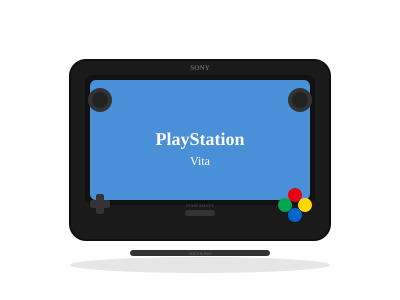

2011 年发布
PlayStation Vita
OLED+双触控 · 索尼掌机绝唱 · 叫好不叫座
1600万
全球销量
OLED
初版屏幕
5寸
屏幕尺寸
¥24,980
首发(日元)
📖 历史与背景
2011年12月17日，索尼在日本发布PlayStation Vita（开发代号"NGP"）。Vita搭载了5寸OLED屏幕（960×544）、四核ARM Cortex A9处理器、PowerVR SGX543MP4+ GPU，性能远超PSP，接近PS3级别。
Vita最大的技术创新是双触控系统——前触摸屏+后触摸板，让游戏操作方式更多样。此外还有六轴感应（陀螺仪+加速度计）、GPS、前后双摄像头、麦克风——在2011年几乎是一台顶配手机级别的硬件。
然而Vita最大的失败在于存储媒介——索尼放弃了UMD，改用专用的PS Vita存储卡（独占规格，价格极高），以及新的游戏卡带（PS Vita Card）。专用存储卡的价格被玩家疯狂吐槽（32GB卡比主机还贵）。加上智能手机的崛起和索尼第一方支持的逐渐放弃，Vita成为索尼掌机绝唱。
⚙️ 硬件规格
CPU
ARM Cortex-A9 4核
GPU
PowerVR SGX543MP4+
内存
512MB RAM + 128MB VRAM
屏幕
5寸 OLED 960×544
触控
前触屏+后触板
摄像头
前后各0.3MP
网络
Wi-Fi + 3G(WiFi版/WiFi+3G版)
存储
专用记忆卡(4/8/16/32/64GB)
🎮 经典游戏阵容
女神异闻录4 黄金版
2012 · RPG
Vita上最好的JRPG，MC93分
神秘海域：黄金深渊
2011 · 动作冒险
首发护航，Vita画面标杆
重力眩晕
2012 · 动作
操控重力飞行，独创玩法
灵魂献祭
2013 · 动作RPG
稻船敬二出品，黑暗共斗
讨鬼传
2013 · 动作RPG
光荣的和风怪猎
杀戮地带：佣兵
2013 · FPS
Vita画质巅峰，主机级FPS
弹丸论破
2013 · 文字冒险
高速推理动作，Vita独占起步
龙之皇冠
2013 · 横版动作
香草社华丽手绘风
🏆 市场表现与遗憾
- 全球销量：1600万台，远低于PSP的8200万，索尼官方2019年宣布停产
- 专用记忆卡：索尼的专属存储卡定价离谱（32GB约$100），是最受批评的设计
- 放弃第一方：索尼第一方工作室从2014年后基本放弃Vita，不再提供独占大作
- 共斗游戏：Vita上的"共斗游戏"（Soul Sacrifice、讨鬼传、自由战争）形成了一种独特的联机文化
- PSTV（2013）：Vita的电视底座版，可连接电视并用手柄玩Vita游戏，但兼容性有限
💡 趣闻与冷知识
- Vita的OLED屏幕在2011年是掌机天花板——对比度、色彩饱和度都远超3DS，甚至在今天看仍有魅力
- Vita的后触摸板是一个很有创意但实用度不高的设计——大多数游戏只是用它来模拟L2/R2键
- Vita的Remote Play功能可以串流PS4游戏——在2013年这是黑科技，但延迟和Wi-Fi限制导致实际体验不稳定
- Vita在日本市场好于欧美——原因是"共斗游戏"在日本很受欢迎，而欧美玩家没有这类文化
- Vita在2021年被黑客完全破解后重新受到怀旧玩家的关注——破解后的Vita运行模拟器和自制软件表现惊人